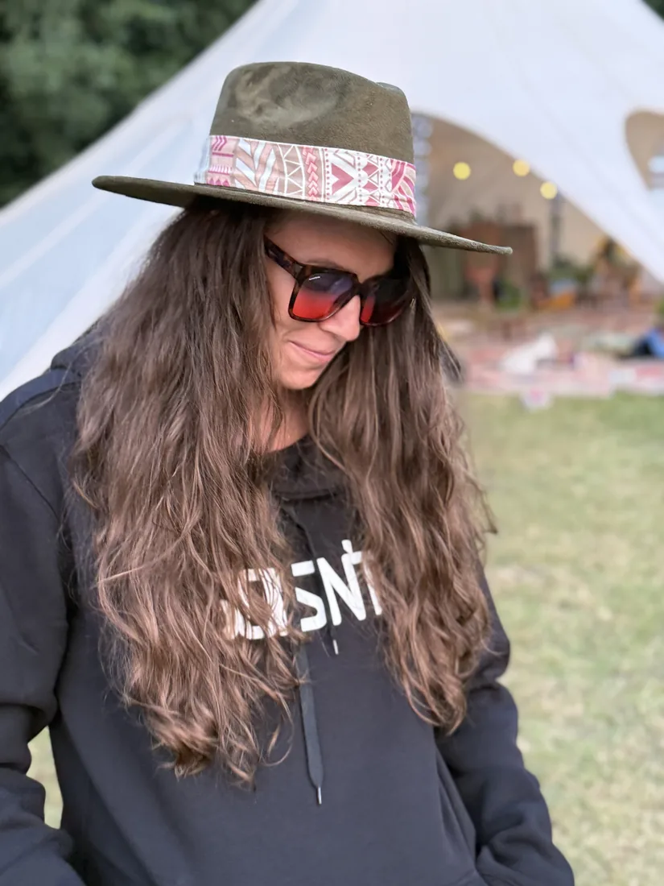

Jest systemem, który można zrozumieć. Łączę wiedzę o mózgu, pracę z nieświadomymi wzorcami i codzienne wybory, by zmiana była głęboka — i możliwa do utrzymania.
Nie pracuję z wyizolowanym „objawem”. Patrzę na to, jak myśli, ciało, historia i codzienne nawyki wpływają na siebie nawzajem.
01
PRACA Z GŁĘBSZYMI WZORCAMI
Hipnoza terapeutyczna
Skoncentrowana praca z reakcjami i przekonaniami, do których sama rozmowa nie zawsze ma łatwy dostęp. Proces prowadzony świadomie, bez utraty kontroli.
Kliknij etap, aby zobaczyć szczegóły. Pełna sesja daje czas na pogłębioną pracę bez pośpiechu, a podane ramy pozostają orientacyjne.
0–15 MIN
Kontakt i cel
Zaczynamy od rozmowy.
Sprawdzamy, z czym przychodzisz, czego oczekujesz i co będzie dla Ciebie sygnałem użytecznej zmiany. Możesz zadawać pytania i wyznaczać granice.
15–25 MIN
Bezpieczeństwo
Ustalamy ramy pracy.
Omawiamy sposób komunikacji, sygnał zatrzymania i to, co pomoże Ci czuć się komfortowo. Hipnoza nie oznacza utraty kontroli.
25–35 MIN
Skupienie uwagi
Uwaga kieruje się do wewnątrz.
Łagodnie zawężamy uwagę. Możesz słyszeć wszystko, mówić i przerwać w dowolnym momencie. Nie ma jednego „właściwego” odczucia transu.
35–100 MIN
Właściwa praca
65 minut pogłębionej pracy z wybranym wzorcem.
To centralna i najdłuższa część spotkania. Dobieram język, tempo i sposób pracy do celu oraz Twojej bieżącej reakcji. Jest przestrzeń na pogłębienie procesu, pracę z zasobami i utrwalenie nowych odpowiedzi — bez narzucania treści i bez pośpiechu.
100–110 MIN
Powrót
Wracamy do zwykłej uwagi.
Dajemy układowi nerwowemu czas na spokojne przejście. Sprawdzamy samopoczucie i nie przyspieszamy integracji.
110–120 MIN
Integracja
Nazywamy wnioski i kolejny krok.
Porządkujemy to, co było ważne, i ustalamy prosty sposób obserwacji po sesji. Celem jest samodzielność, nie zależność od procesu.
Uczciwa kwalifikacja
Czy ta forma pracy jest dla Ciebie?
Premium oznacza również umiejętność powiedzenia „to nie jest właściwy moment” i skierowania do odpowiedniej pomocy.
✓
To może być dobry kierunek, jeśli…
Szukasz świadomej, współpracującej formy pracy i jesteś gotowa lub gotowy obserwować własne reakcje.
chcesz pracować z napięciem, nawykiem lub powtarzalnym wzorcem
zależy Ci na zrozumieniu procesu, a nie magicznej obietnicy
możesz zapewnić sobie prywatne, spokojne miejsce na sesję Zoom
akceptujesz, że tempo i efekt są indywidualne
!
Najpierw skonsultuj się z innym specjalistą, jeśli…
Bezpieczeństwo ma pierwszeństwo przed rozpoczęciem procesu.
doświadczasz ostrego kryzysu psychicznego lub zagrożenia życia
pojawiają się objawy psychozy, manii albo znaczna dezorientacja
jesteś pod wpływem alkoholu lub substancji podczas planowanej sesji
potrzebujesz diagnozy, leczenia medycznego lub interwencji kryzysowej
W sytuacji bezpośredniego zagrożenia skontaktuj się z numerem alarmowym 112 lub lokalnym centrum interwencji kryzysowej. Hipnoterapia nie zastępuje leczenia.
Proces, nie cud
Anonimowe historie realnej pracy.
Przykładowe, zanonimizowane obrazy procesu. Nie są gwarancją rezultatu — pokazują sposób myślenia i strukturę współpracy.
NAPIĘCIE · 5 SPOTKAŃ
„Rozumiem stres, ale moje ciało nadal nie odpuszcza.”
Punkt wyjścia
Stała mobilizacja i trudność z przechodzeniem w odpoczynek.
Kierunek pracy
Rozpoznanie sygnałów bezpieczeństwa, praca hipnoterapeutyczna i mikropraktyki między sesjami.
Zauważona zmiana
Wcześniejsze rozpoznawanie napięcia i większa możliwość wyboru reakcji.
Nie obiecywałyśmy życia bez stresu — celem była elastyczniejsza reakcja.
SCHEMAT · 10 SPOTKAŃ
„Wiem, dlaczego to robię. Chcę przestać wracać w to samo miejsce.”
Punkt wyjścia
Dobra samoświadomość, ale automatyczny wzorzec w relacjach.
Kierunek pracy
Kontakt z funkcją schematu, budowanie nowych reakcji i integracja w codzienności.
Zauważona zmiana
Większa pauza pomiędzy bodźcem a działaniem oraz łagodniejszy dialog wewnętrzny.
Zmiana nie była liniowa. Monitorowałyśmy proces zamiast oceniać pojedynczy dzień.
ENERGIA · 3 KONSULTACJE
„Mam wszystkie suplementy, ale nadal jestem zmęczona.”
Punkt wyjścia
Nieregularny rytm dnia, przeciążenie i chaos informacyjny wokół odżywiania.
Kierunek pracy
Priorytetyzacja snu, regularności posiłków i redukcja zbędnych interwencji.
Zauważona zmiana
Stabilniejsza energia oraz prostszy plan możliwy do utrzymania.
Gdy potrzebna jest diagnostyka medyczna, konsultacja nie zastępuje lekarza.
Ścieżka pracy
Od pierwszej rozmowy do trwałej zmiany.
Proces ma strukturę, ale nie jest taśmą produkcyjną. Każdy etap wynika z tego, co naprawdę jest Ci potrzebne.
Poznajemy temat i oczekiwania. Sprawdzamy, czy moja metoda jest adekwatna i bezpieczna dla Twojej sytuacji.
02
PIERWSZE SPOTKANIE
Konsultacja neuropsychologiczna
Tworzymy mapę wzorców, zasobów i obciążeń. Ustalamy realny cel oraz formę dalszej pracy.
03
PROCES INDYWIDUALNY
Sesje hipnoterapii
Pracujemy z wybranym obszarem, regularnie sprawdzając reakcję i postęp. Wszystko dzieje się w Twoim tempie.
04
INTEGRACJA
Follow-up
Utrwalamy zmianę, porządkujemy wnioski i budujemy plan, który wspiera samodzielność po zakończeniu procesu.
15+LAT BLISKO NAUKI
O mnie
Nauka nauczyła mnie zadawać lepsze pytania.
„Łączę to, co mierzalne, z tym, co głęboko ludzkie — by wiedza o mózgu naprawdę służyła zmianie.”
Jestem hipnoterapeutką i neuronaukowczynią. Ukończyłam kierunek Neurosciences na University of Cincinnati w Ohio oraz Profesjonalną Szkołę Hipnoterapii. Posiadam certyfikację International Hypnosis Association i ukończyłam Psychedelic Guide Training — przygotowanie do odpowiedzialnego towarzyszenia ludziom w poszerzonych stanach świadomości.
Jako członkini Core Teamu SACRUM i koordynatorka CIEŃ Festiwalu tworzę przestrzenie, w których rozwój spotyka się z bezpieczeństwem, relacją i rzetelną wiedzą o układzie nerwowym. W pracy nie przeciwstawiam nauki doświadczeniu — wykorzystuję jedno, aby lepiej rozumieć drugie.
Zdrowie znam również od strony codziennej praktyki. Jestem byłą pływaczką, pasjonuję się sportem i świadomym odżywianiem, a doświadczenie szefowej kuchni w Starej Kuźni nauczyło mnie przekładać teorię na konkret: rytm dnia, smak, energię i wybory, które da się naprawdę utrzymać.
neuronaukacertyfikowana hipnoterapiaintegracja doświadczeńzdrowie w praktyce
Prywatnie

Współpraca
Partnerzy
Marki, szkoły i inicjatywy, z którymi łączy mnie wspólny kierunek: wiedza, rozwój i odpowiedzialna praca z człowiekiem.
Centrum terapii psychodelicznych
Festiwal kultury i świadomości
Szkoła edukacji hipnoterapeutycznej
Zacznij
60 sekund dla układu nerwowego
Zanim przejdziesz dalej, zrób miejsce na oddech.
Krótka pauza z wydłużonym wydechem. Nie jest terapią — jest małym doświadczeniem tego, jak pracujemy: bez pośpiechu i bez przymusu.
Przejrzyste zasady
Inwestycja w proces, nie w obietnicę.
Przed wyborem pakietu spotykamy się na bezpłatnej rozmowie. Razem oceniamy, jaka forma ma sens.
POJEDYNCZE SPOTKANIE
Sesja wstępna hipnoterapii
700PLN / 2 H
Dla osób, które chcą poznać metodę i rozpocząć pracę nad konkretnym tematem.
Tak. Hipnoza terapeutyczna nie jest snem ani utratą woli. Pozostajesz świadomą osobą, możesz mówić, przerwać proces i nie zrobisz niczego wbrew sobie.
Skąd mam wiedzieć, która forma pracy jest dla mnie?+
Właśnie po to jest bezpłatna konsultacja. Omawiamy temat i wspólnie wybieramy najbardziej adekwatny pierwszy krok — czasem będzie nim hipnoterapia, czasem konsultacja, a czasem rekomendacja innego specjalisty.
Czy spotkania odbywają się online?+
Tak, dostępna jest praca online. Szczegóły techniczne i warunki sprzyjające komfortowej sesji ustalimy podczas pierwszej rozmowy.
Czy hipnoterapia zastępuje psychoterapię lub leczenie?+
Nie. Hipnoterapia i konsultacje nie zastępują diagnozy lekarskiej, psychoterapii ani leczenia psychiatrycznego. Gdy sytuacja tego wymaga, rekomenduję kontakt z odpowiednim specjalistą.
Czy muszę od razu kupować pakiet?+
Nie. Zaczynamy od rozmowy i pojedynczego spotkania. Pakiet ma sens dopiero wtedy, gdy obie strony widzą korzyść z dalszej, regularnej pracy.
Pierwszy krok niczego nie zobowiązuje
Nie musisz wiedzieć, od czego zacząć. Wystarczy, że zaczniesz.
20 minut spokojnej rozmowy. Bez sprzedażowego skryptu. Bez presji. Z miejscem na Twoje pytania.


 Festiwal kultury i świadomości
Festiwal kultury i świadomości